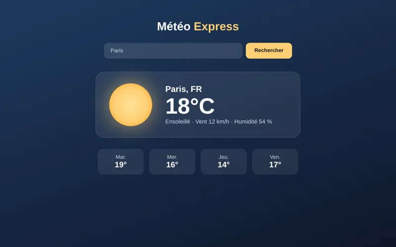

Météo Express
Application météo : on tape le nom d'une ville et elle affiche la température, le vent, l'humidité et les prévisions des 4 prochains jours. Les données viennent de l'API OpenWeatherMap, récupérées en JavaScript avec fetch().
Voir le code sur GitHub